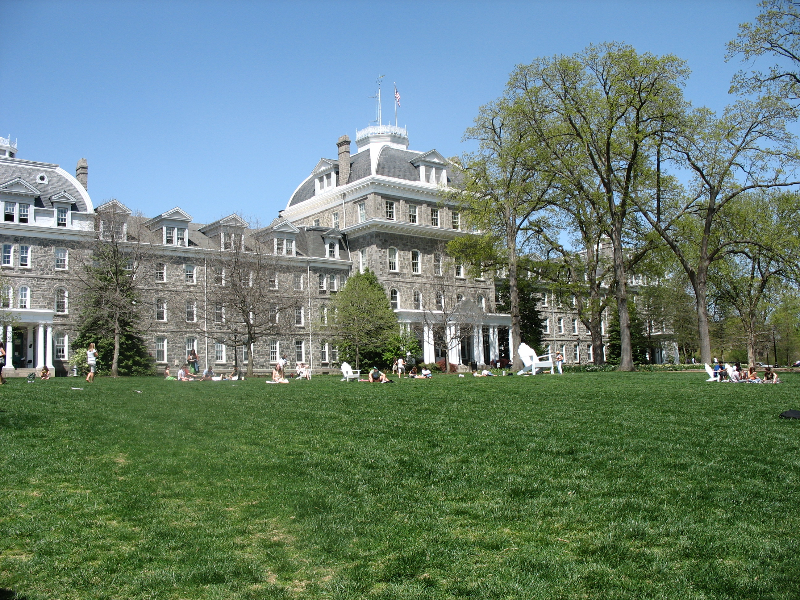

Swarthmore is a liberal arts college located in Swarthmore, Pennsylvania, which is eleven miles south of Philadelphia. The college is in a suburban setting. Swarthmore operates under a semester-based academic schedule. Swarthmore is a member of the Tri-Colleges consortium, which also includes Haverford and Bryn Mawr. Students may take courses at any of these colleges. Swarthmore has a relatively small student body size relative to other liberal arts college. Their 1,534 students make-up a 8:1 student faculty ratio on Swarthmore's campus. The top five most popular majors are social sciences, biological and biomedical sciences, visual and performing arts, foreign languages, and psychology. Swarthmore is known for its focus on academics and its shunning of collegiate sports; the school no longer has a football team. While Greek life is available at Swarthmore, only about 10% of students choose to enter a frat or sorority.
